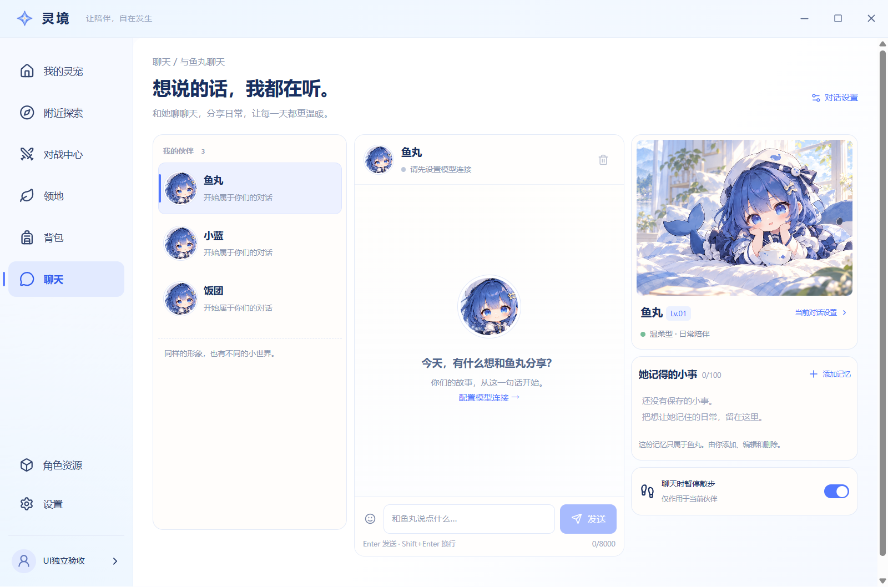
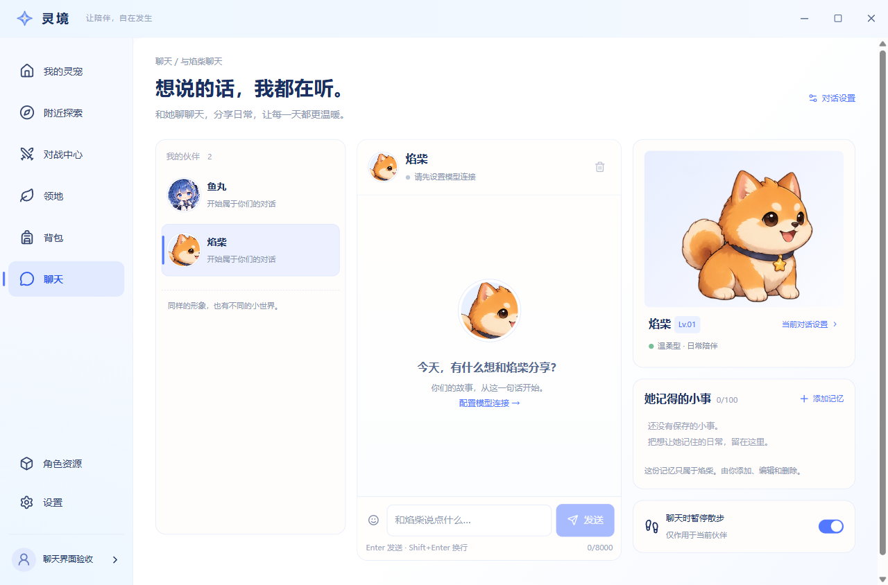
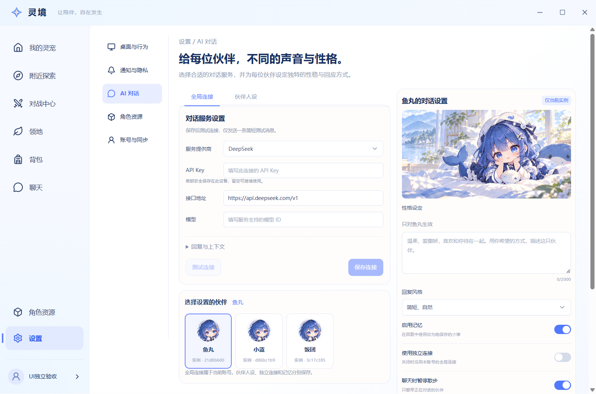
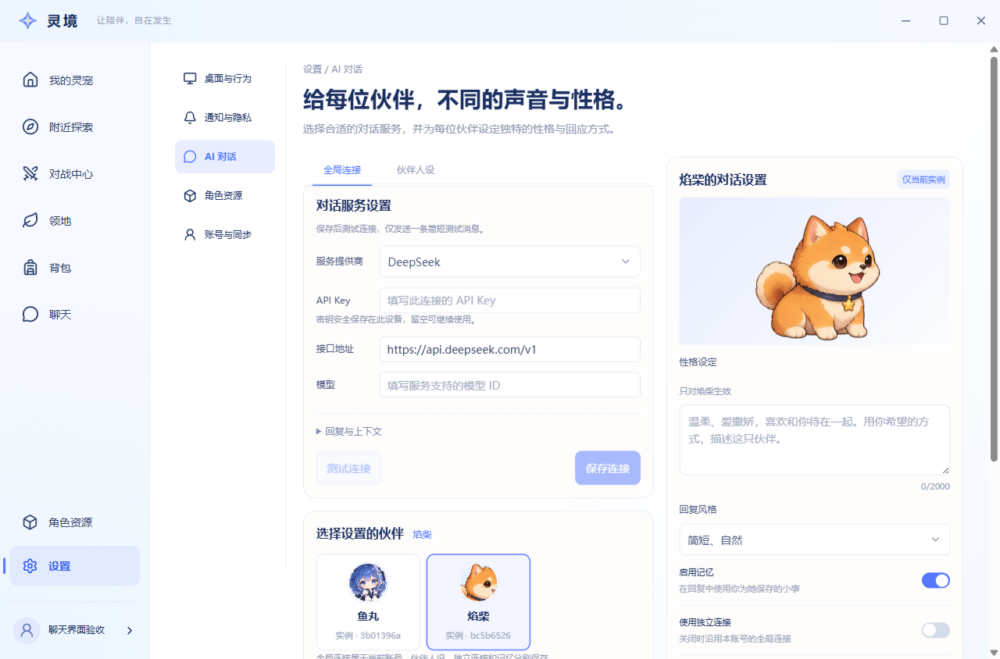

依据 9915684 的 A01—A12 清单，本分支处理 A01、A03、A12 及 A07 的聊天资源适配。以下均为正式构建的真实 Electron 截图，文件未修改；这是证据图册，不承载产品逻辑。
本轮 零模型请求、零虚构聊天消息。在隔离本地账号公开领养两只宠物，将项目已有原创焰柴角色包通过正式导入和形象绑定服务用于验证。测试适配器只为原生文件选择器提供指定包路径，解析、复制、归属检查、绑定和绘制均使用产品代码。六个正式形象及完整动作仍由资源会话统一交付，整体验收等待合并后的集中回验。
| 层级 / 间距 | 当前实测 | 公共 token |
|---|---|---|
| 两页主标题 | 28px / 700，行高 39.2px | text-title / weight-title |
| 卡片标题 / 正文 / 辅助字 | 16px / 14px / 11px | text-card / text-body / text-caption |
| 卡片间距 / 外边距 | 父 gap 16px / Card margin 0 | space-4；不叠加默认 Card 外距 |
| 页面内距 | 1280、1440：24px 32px 16px；980：24px 24px 16px | page-pad-block / page-pad-inline / space-4 |




切回鱼丸 · 1440 聊天 · 1440 AI 设置 · 完整 computed-style 与 IPC 验收记录
基线窗口高度与当前相差 2 CSS 像素，Windows DPR/截图尺寸见 JSON。不可仅凭两张物理图的像素差，宣称全部视觉通过；当前结果是本模块定向检查通过，整体仍待集中验收。